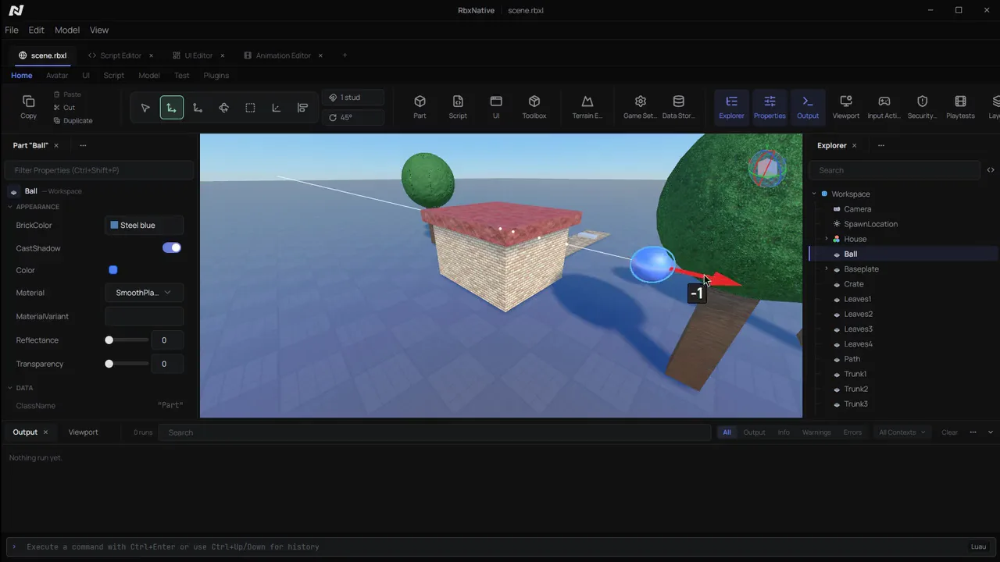

Features / Editing and building
Move, Scale, Rotate and Transform
Studio's gizmos with snapping, handle summoning and a live stud readout.
Select, Move, Scale, Rotate and Transform are on the ribbon and on 1 to 5. Transform gives you arrows, scale balls and rotate rings on the same selection at once.

How to use it
- The transform toolbar has Studio's snap increments: one studs field for Move and Scale, one degrees field for Rotate, each with its own checkbox.
- Hold
Shiftduring a drag to flip snapping for that drag only. - Hold
Tabto summon the active tool's handles to the point under your cursor. Rotate snaps the summoned point to a face's edge or corner. - Hold
Alton a Ball's or Cylinder's scale handle to keep it round. - With snapping off, a dragged part soft-snaps onto the surfaces, edges and corners it passes and squares itself onto what it lands on.
- World and Local space, and a lone selection's handles stand on its pivot.
Compared to Studio
- A small label follows your cursor during a Move or Scale drag with the distance moved, or how much the axis grew, in studs.
- Move and Transform have a grey ball at the gizmo's origin that drags the selection, handy once handles are summoned far away.